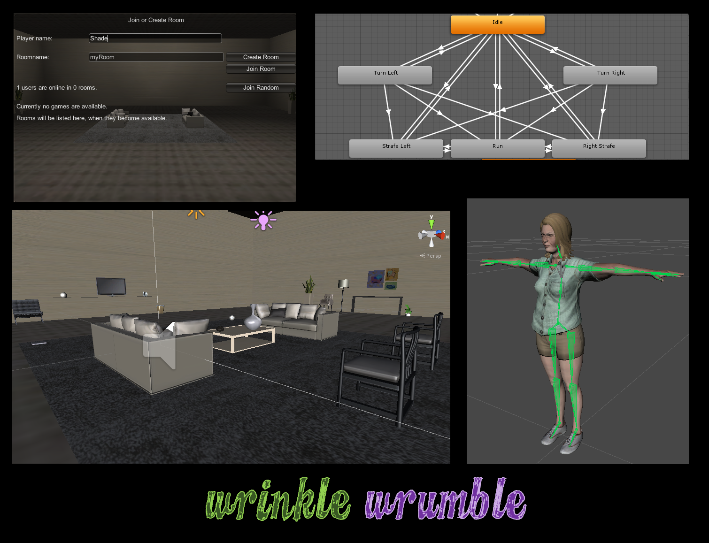

Wrinkle Wrumble Online

Project description
Using Photon Unity Netowrking (PUN), we are able to create a fully functional online multiple rumble game.
Wrinkle Wrumble is a rumble game where you play as a senior in an old retirement home.
Play are able to push and throw objects at each other to deal damage.
Damage calculation are based on the velocity upon impact.
Click here to play the web demo.
Team Members
Click here to play the web demo.
Team Members
- Akmal Idris
- Sahle Alturaigi
Technologies used
Unity3D, Photon Unity Networking, C#, Mixamo